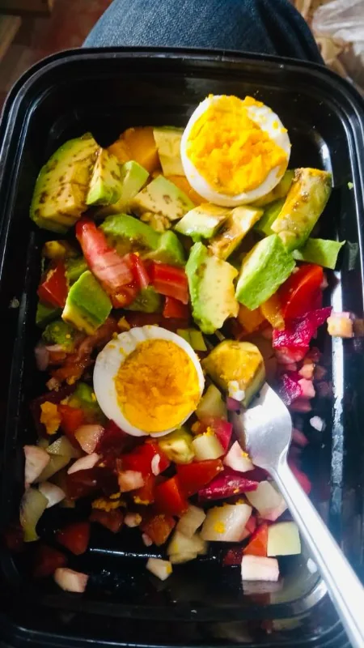
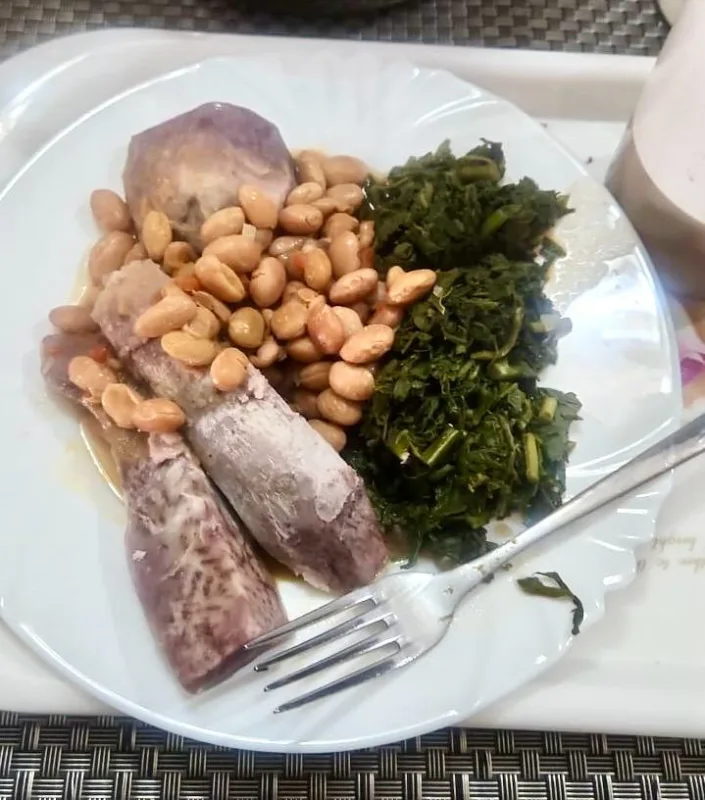
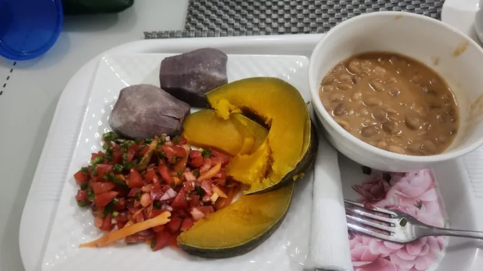
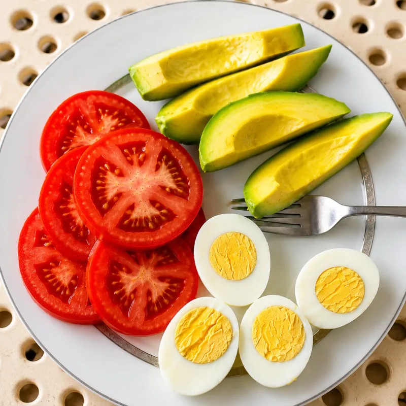
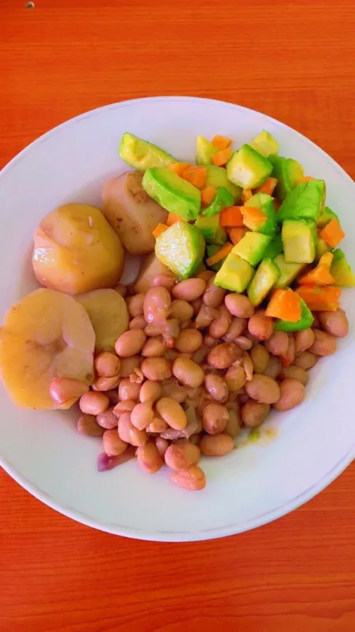
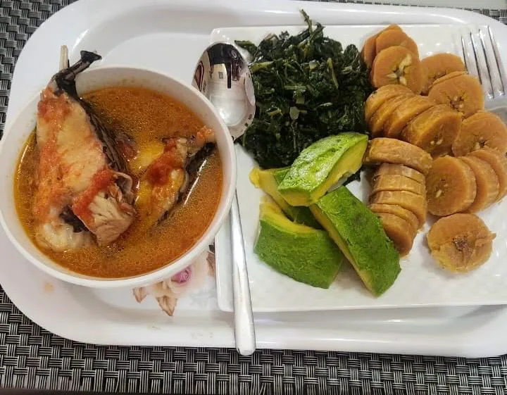
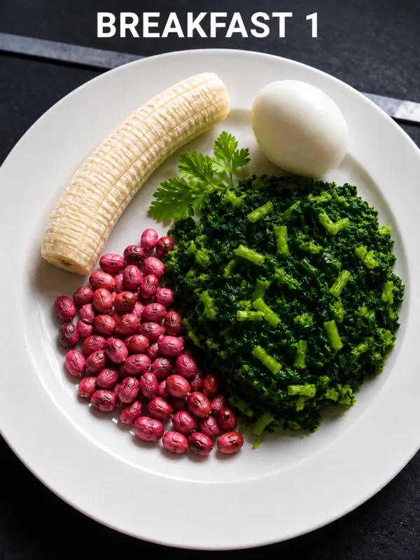

Hormonal Health
Hormones affect energy, mood, metabolism, fertility and sleep. I support women through every stage: PMS, PCOS, fertility, pregnancy, perimenopause and menopause.
Good health is one of the greatest gifts you can give yourself and those you love: the energy to care for your family, chase your goals, and enjoy life to the fullest.
I don’t believe in one-size-fits-all nutrition advice. Lasting health isn’t built through extreme diets or quick fixes. It grows from small, consistent choices.
Recommendations grounded in current nutrition research, while staying practical, realistic and easy to apply.
Nutrition, movement, sleep, stress, mindset and relationships: I support the whole person, not just symptoms.
Whatever brought you here, whether it’s nutrition, a health condition, or simply feeling your best, I’m here to guide and support you every step of the way.
Hormones affect energy, mood, metabolism, fertility and sleep. I support women through every stage: PMS, PCOS, fertility, pregnancy, perimenopause and menopause.

A healthy gut is the foundation of good health: better digestion, less bloating, a stronger microbiome, and natural detoxification working well.

Healthy weight management, insulin resistance, type 2 diabetes, blood pressure, fatty liver, cholesterol and low energy, through practical coaching.
Strong bones and healthy joints keep you active and independent, with habits that protect bone health and support mobility.
Vitality, independence and quality of life as you grow older, through nourishing nutrition, regular movement, restorative sleep and preventive health.

Food comes first. But when age, stress, pregnancy or medication raise your needs, I help you choose supplements wisely, as a complement, never a replacement.
No extreme diets, no quick fixes: everyday meals built from food you already know, in balanced portions you can keep up.




I’m privileged to work with women who have transformed their health by improving their nutrition, building healthier habits and making sustainable lifestyle changes.
From increased energy and healthy weight loss to better management of chronic conditions and renewed confidence, these stories are a reminder that meaningful change is possible.
Lose weight, improve digestion, balance hormones, or manage a chronic condition: every journey begins with a single step. I’ll bring the knowledge, tools, encouragement and accountability.